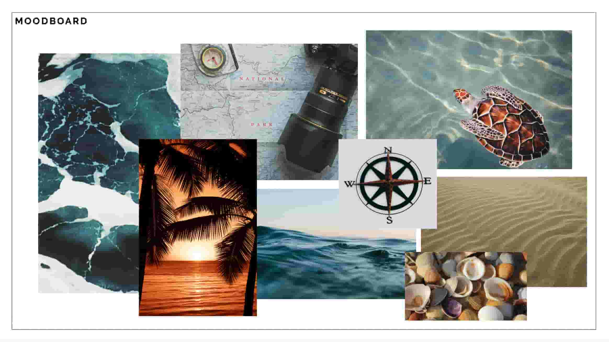
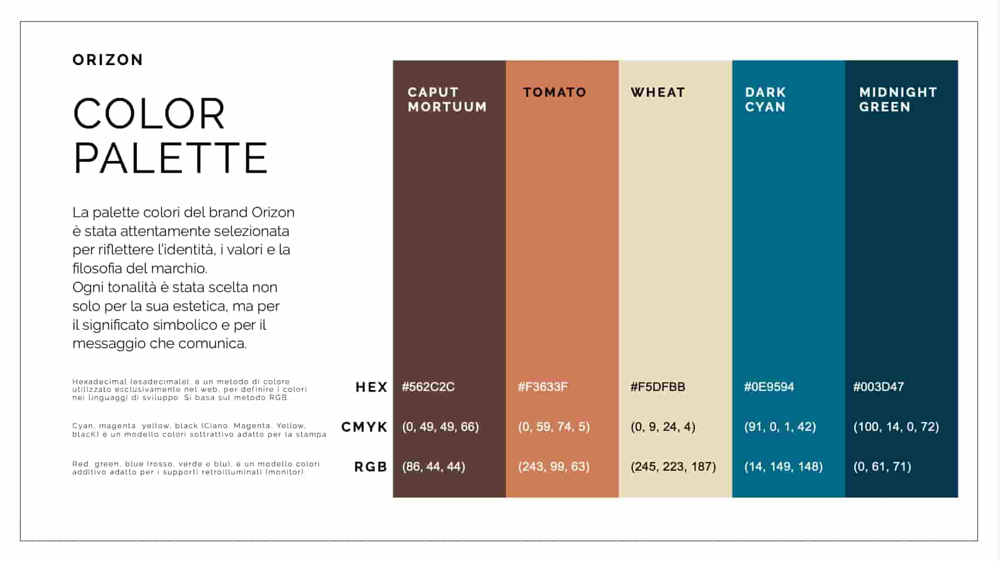

Orizon Travel Agency – Brand Identity
Rebranding for a sustainable and experience-driven travel brand
Orizon is a travel agency focused on creating authentic and sustainable travel experiences. The goal of this project was to develop a cohesive brand identity that reflects its values of conscious travel and cultural respect.
I designed a complete visual system, including logo, typography, and color palette, along with a brand book to ensure consistency. I also created social media templates and cover assets to strengthen the brand’s digital presence.
The result is a modern and recognizable identity that communicates Orizon’s mission: turning travel into a meaningful and responsible experience.

